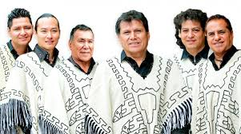
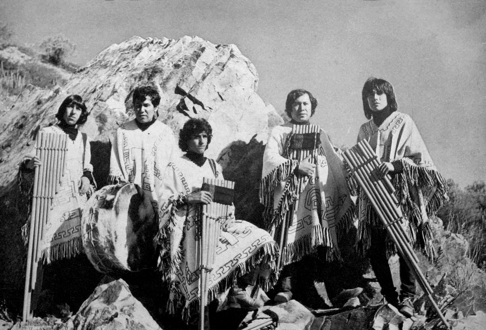
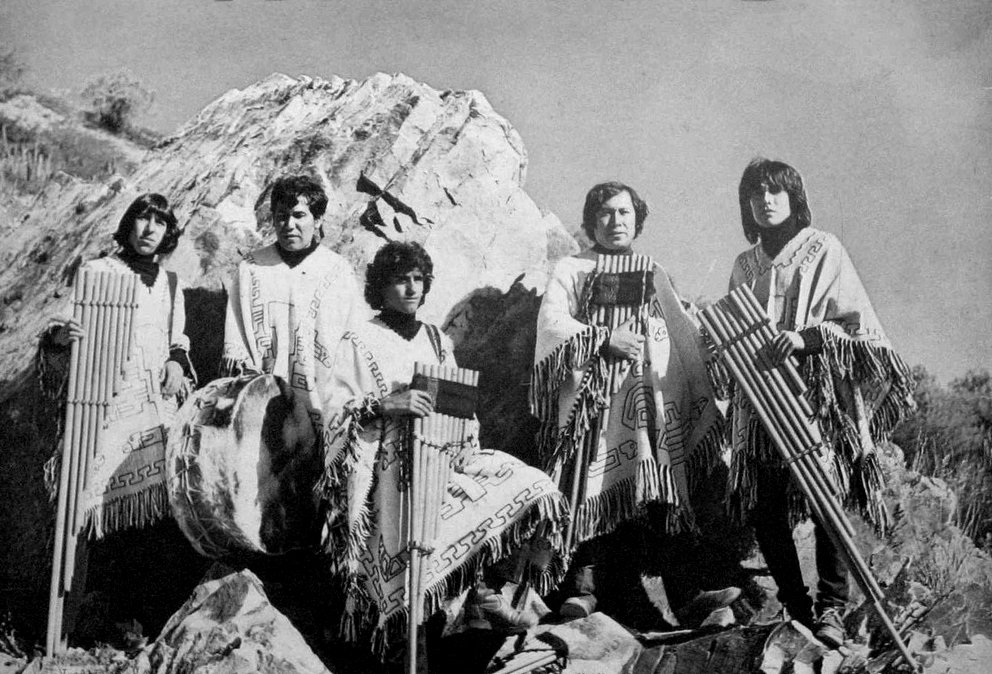
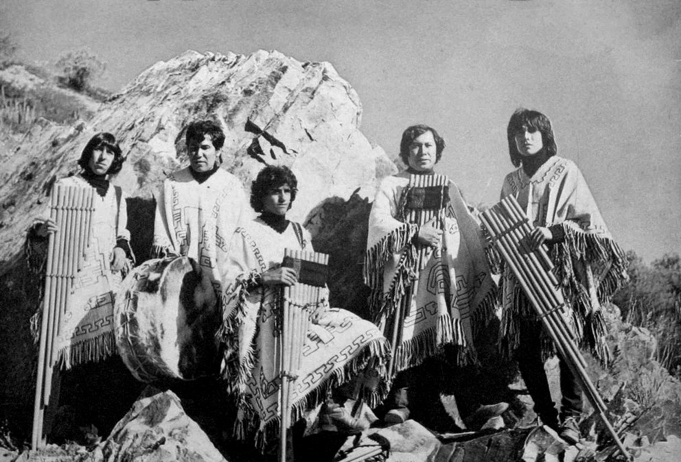

Los Kjarkas

 


Sobre a Banda.
- Anos de atividade: 1965 – até o momento (55 anos)
- Local de fundação: Cochabamba, Bolívia
- Membros:
- Gonzalo Hermosa González
- Elmer Hermosa González
- Gastón Guardia Bilboa
- Makoto Shishido
- Lin Angulo
- Gonzalo Hermosa González Jr
Los Kjarkas é uma banda tradicional de música andina da Bolívia.O nome da banda tem origem na palavra quíchua qarka, que significa "força". Desde a década de 60 estão ativos e são considerados os mais conhecidos do gênero em todo o mundo. Teve inicio em 1965 na cidade de Capinota pelos irmãos Hermosa (Wilson, Gonzalo e Castel) e Édgar Villarroel
Sua canção "Llorando se fue" foi traduzida sem autorização pelo grupo francês Kaoma que graças à música - Chorando Se Foi - alcançou sucesso internacional.
- Caso ficou curioso visite: Los Kjarkas-Wikipédia.
- Referência: www.last.fm/